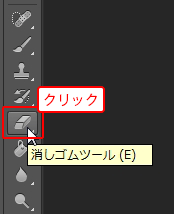
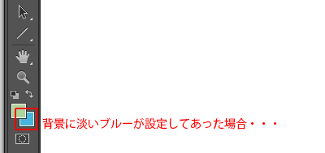
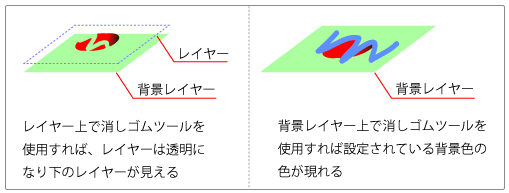
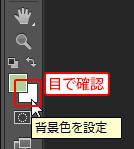
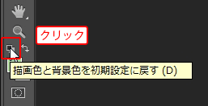
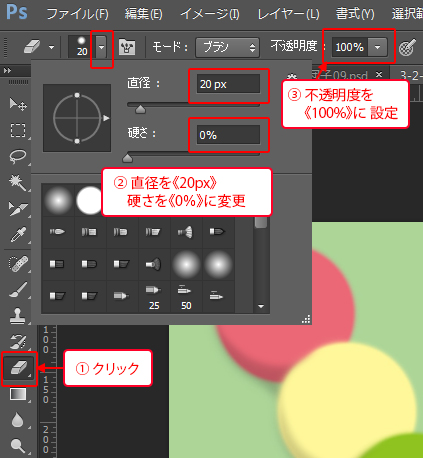
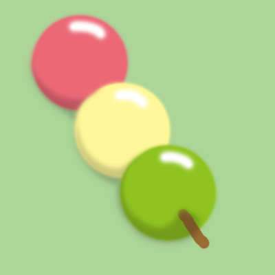
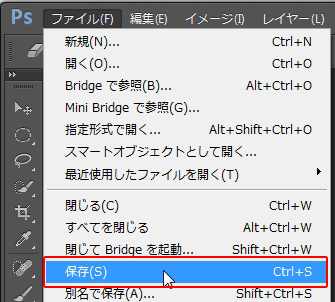
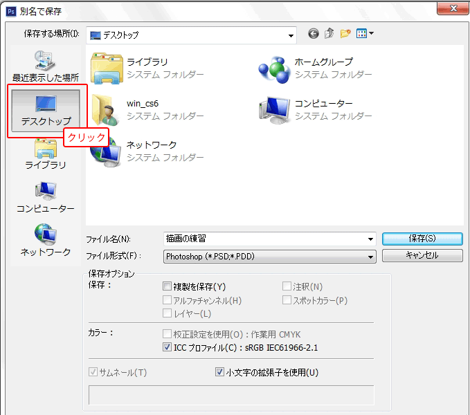

本項では、消しゴムツールの使い方を学習します。
[消しゴムツール]はドラッグした箇所の色を変更することができるツールですが、
作業するレイヤーによって変更内容が異なります。



ちなみに、ここまでで描いたお団子の絵は「背景レイヤー」に描画されています。
[カラー選択ボックス]の「背景色」を「白」に設定します。

他の色に設定されている場合は[描画色と背景色を初期設定に戻す]をクリックしても構いません。

カラー選択ボックスが初期設定「描画色：黒、背景色：白」の状態に戻ります。
[消しゴムツール]の設定できる項目は基本的に[ブラシツール]とほぼ同じです。
「直径」を《20px》、「硬さ」を《0%》、「不透明度」を《100％》に設定します。

お団子のハイライト部分を描画します。

メニューバーの[ファイル]-[保存]を選択します。

ファイルの保存
[別名で保存]ダイアログボックスが表示されます。
ここでは、デスクトップに保存します。
[保存する場所]をデスクトップに設定し、[ファイル名]を入力します。
ここでは、新規ファイル作成時にファイル名「描画の練習」と設定していますので、
ファイル名は自動的に設定されます。
保存先とファイル名を確認して、
[保存]ボタンをクリックします。

デスクトップに保存された「描画の練習.psd」を学習用サーバの「ご自分のフォルダ」へ移動し、
デスクトップから削除しておきましょう。
通信講座で学習されている方は、ご自分のパソコンのお好きな場所に移動させてください。
以上でこの項の学習は終了です。
ファイルは閉じて次の項へ進んでください。